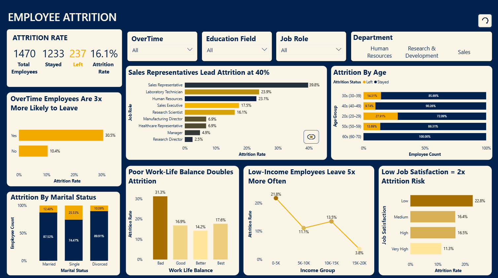

Hi, I'm Muhammad Hamza —
I turn messy, scattered data into dashboards people actually trust — and the reports nobody wants to do, into systems that run themselves.
A Data Analyst & Automation Specialist with 7+ years, I grew from SEO and e-commerce into full-time data infrastructure. Today at Pakistan's Press Information Department, I automate daily media monitoring with the DeepSeek API — scraping coverage across 29+ newspapers and replacing manual reporting with hands-off pipelines.
My toolkit runs from Power BI, Tableau & SQL to Python, Selenium, Playwright & Apps Script. The goal is always the same: take a process from "someone does this every Monday" to "it just runs."
Power BI dashboards, Python reporting automation, DeepSeek media monitoring, 29+ scrapers & alert pipelines.
Built Power BI sales & performance dashboards and ran A/B testing to drive data-informed decisions.
Built monthly & annual sales reports and interactive dashboards in Excel & Power BI; pricing analysis.
Keyword research & competitor analysis — an early start in data-driven decision making.

If you've got data sitting somewhere awkward, or a process someone does every Monday — drop a line.
m_h2713@yahoo.com